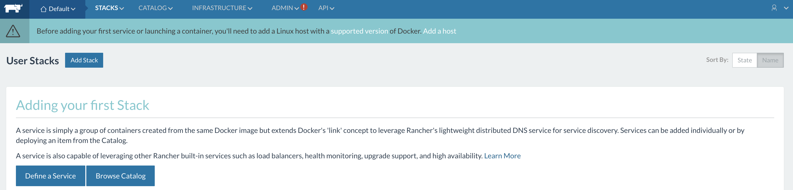
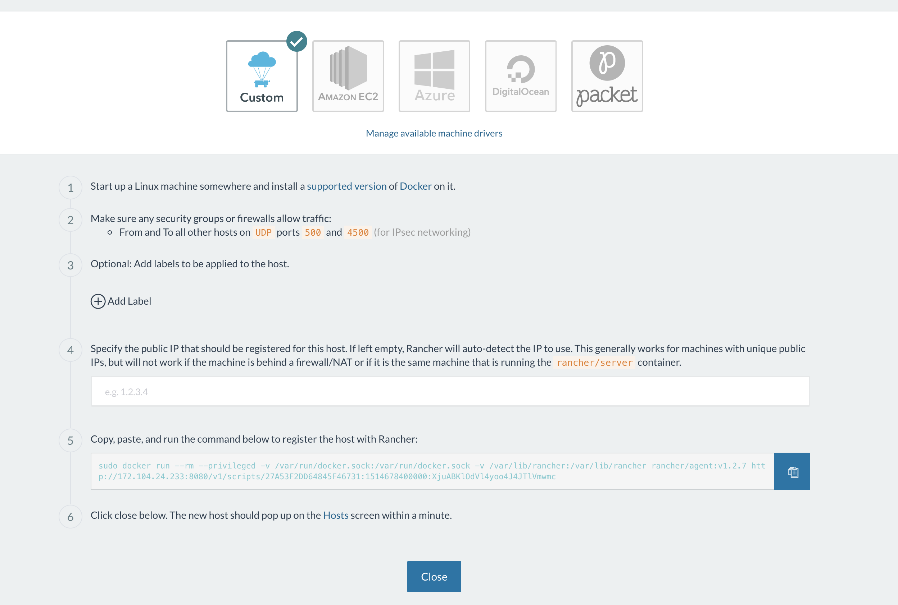
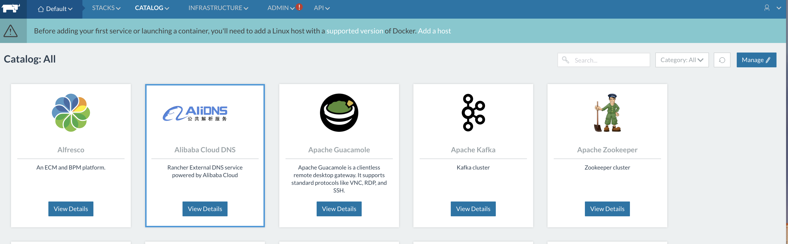
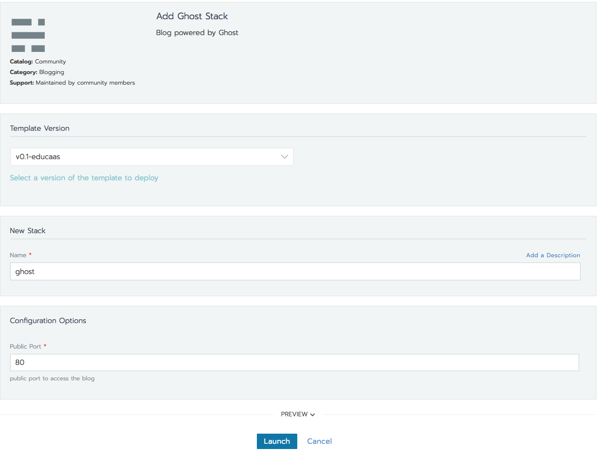
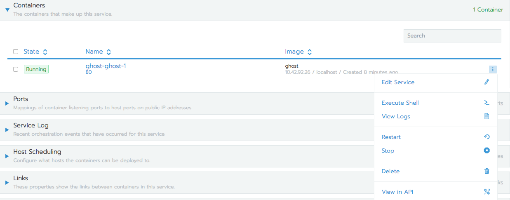
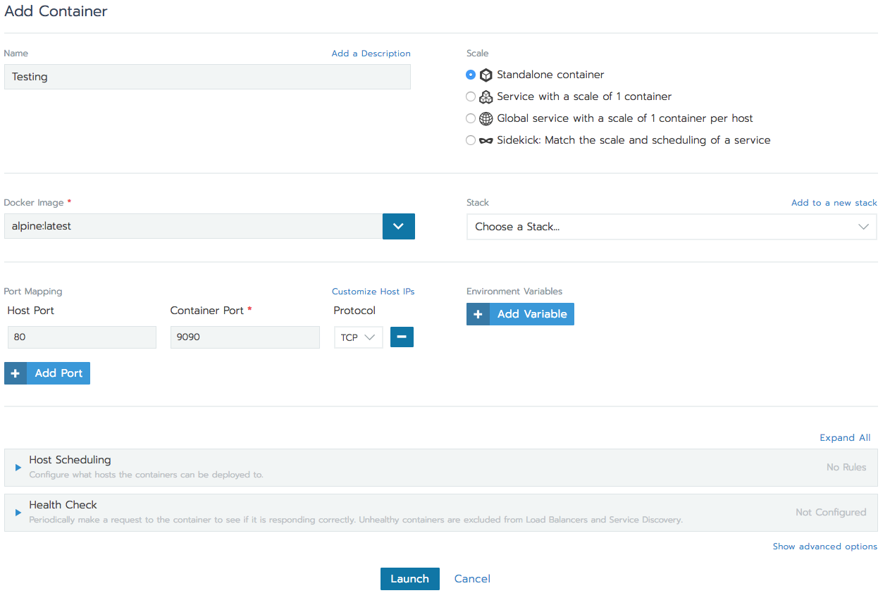

How to Deploy Apps with Rancher
Updated by Linode Written by Angel
DeprecatedThis guide has been deprecated and is no longer being maintained.Please refer to the updated version of this guide.
What is Rancher?
Rancher is a tool that streamlines container usage on a host. Rancher sits on top of Docker and Kubernetes, giving you the ability to stand up clusters of containers with the push of a button. The web front-end gives the you and your users access to an impressive catalog of ready-to-go containerized tools that can be deployed from within Rancher.
This guide shows you how to install Rancher, then deploy services with Docker and Kubernetes.
Prepare the Environment
Two Docker containers are needed to run Rancher:
rancher/serverhosts the front-end portal, andrancher/agentconnects remote hosts with the Rancher server.
In this guide both of these containers will be run on the same Linode. If you would like to add additional Linodes as Rancher agents, you will need to install Docker on each Linode.
Install Docker CE
You will need a Linode with Docker CE installed to follow along with the steps in this guide. Rancher uses specific versions of Docker to interface with Kubernetes.
curl https://releases.rancher.com/install-docker/17.03.sh | sh
Modify Permissions
Add the user to the docker group, so that Docker commands can be run without sudo:
usermod -aG docker $USER
Install Rancher
Launch the Rancher container:
sudo docker run -d --restart=unless-stopped -p 8080:8080 rancher/server:stableVerify that Rancher is running:
curl -I localhost:8080HTTP/1.1 200 OKdocker ps60e73830a1bb rancher/server:stable "/usr/bin/entry /usr…" 5 minutes ago Up 5 minutes 3306/tcp, 0.0.0.0:8080->8080/tcp objective_meninsky
Deploy Apps with Rancher
The applications in Rancher’s catalog are Dockerfiles. These Dockerfiles are viewable and editable from within Rancher. The DockerFiles define the stack, or the fleet of individual containers necessary to bring up a service, and groups them in one place.
Add a Host
In order for Rancher to deploy containers on remote hosts, each host must be registered with the Rancher server. This guide will use the Linode running the Rancher server as the host, but any number of Linodes can be added using the these steps.
In a browser, navigate to
yourLinodesIP:8080to view the Rancher landing page:
A banner at the top of the screen will prompt you to add a host. Click Add a host to begin this process.

Enter your Linode’s IP address into the box in Item 4. This will customize the registration command in item 5 for your system. Copy this command and run it from the command line.
Run
docker-psafter the registration process to verify thatrancher/agentis running on the host:CONTAINER ID IMAGE COMMAND CREATED STATUS PORTS NAMES a16cd00943fc rancher/agent:v1.2.7 "/run.sh run" 3 minutes ago Restarting (1) 43 seconds ago rancher-agent 60e73830a1bb rancher/server:stable "/usr/bin/entry /usr…" 3 hours ago Up 3 hours 3306/tcp, 0.0.0.0:8080->8080/tcp objective_meninskyGo back to the Rancher web application and press Close. You will be taken to the catalog, where Rancher lists all of the applications that can be installed through the platform:

Install the Ghost Blogging Engine
As an example, install the Ghost blog platform. This will showcase Rancher’s interaction with Docker.
In the catalog, select Ghost, leave the default settings and click the create button.

Query your Linode with
docker ps, and Docker will show what containers are running on the machine:144d0a07c315 rancher/pause-amd64@sha256:3b3a29e3c90ae7762bdf587d19302e62485b6bef46e114b741f7d75dba023bd3 "/pause" 44 seconds ago Up 42 seconds k8s_rancher-pause_ghost-ghost-1-c9fb3da6_default_afe1ff4d-f7ce-11e7-a624-0242ac110002_0 fddce07374a0 ghost@sha256:77b1b1cbe16ae029dee383e7bd0932bd2ca0bd686e206cb1abd14e84555088d2 "docker-entrypoint..." 44 seconds ago Up 43 secondsNavigate to your Linode’s IP address from the browser for the Ghost landing page.
You have just used Rancher to deploy a containerized Ghost service.
In the Rancher interface, click on the Ghost container:

This page monitors performance, and offers you options to manage each individual container. Everything from spawning a shell within the container, to changing environment variables can be handled from within this page. To remove the application on the Apps screen, click Delete.
Launch Services From Rancher
You can launch individual custom containers with Rancher in the Containers section of the application:

More Information
You may wish to consult the following resources for additional information on this topic. While these are provided in the hope that they will be useful, please note that we cannot vouch for the accuracy or timeliness of externally hosted materials.
Join our Community
Find answers, ask questions, and help others.
This guide is published under a CC BY-ND 4.0 license.